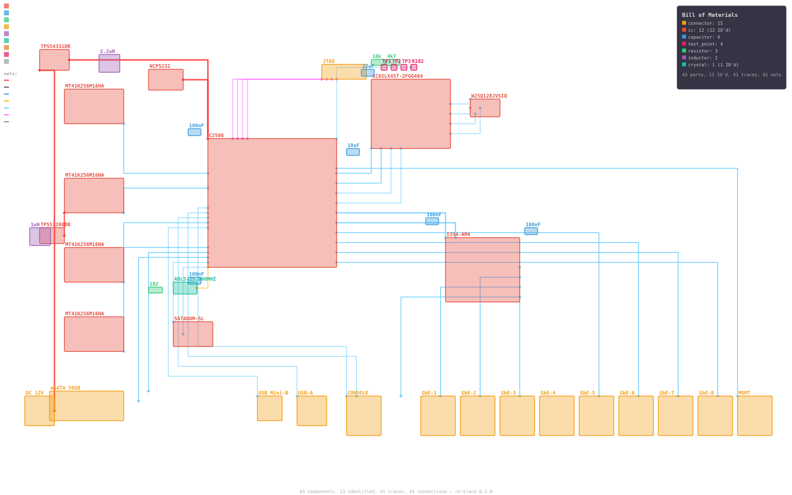
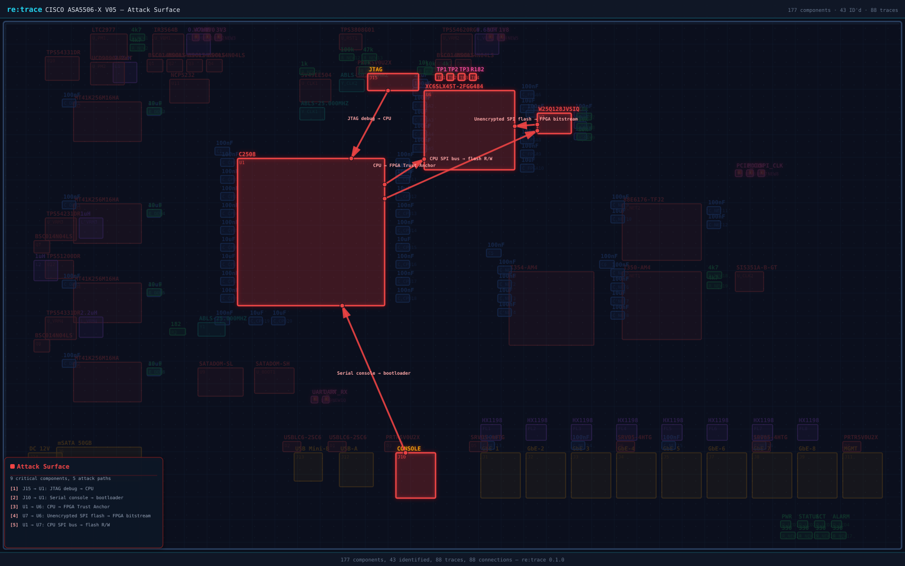
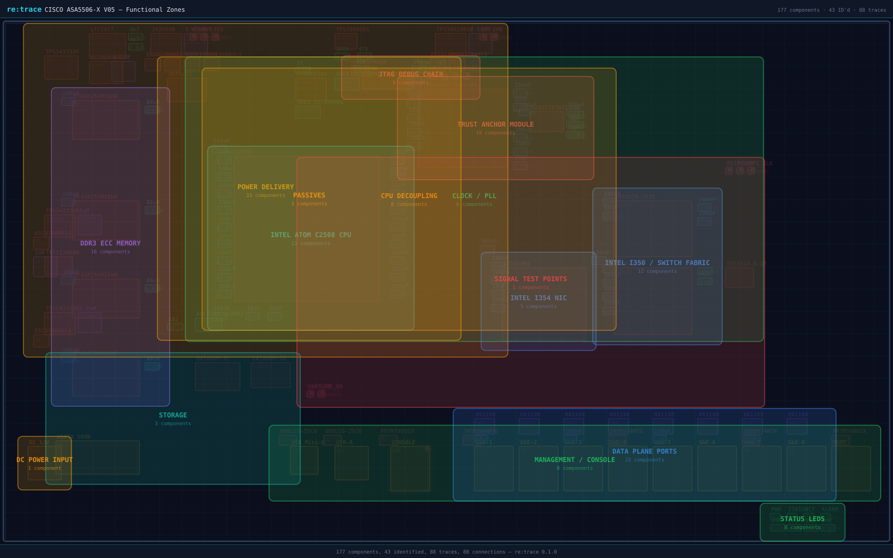
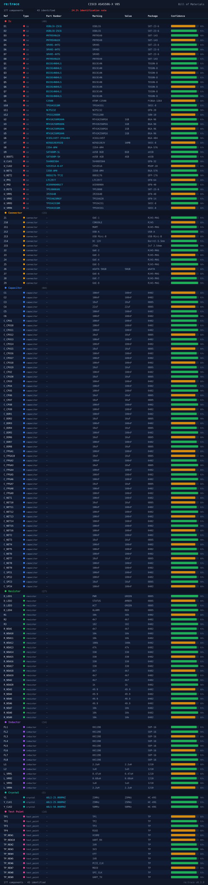
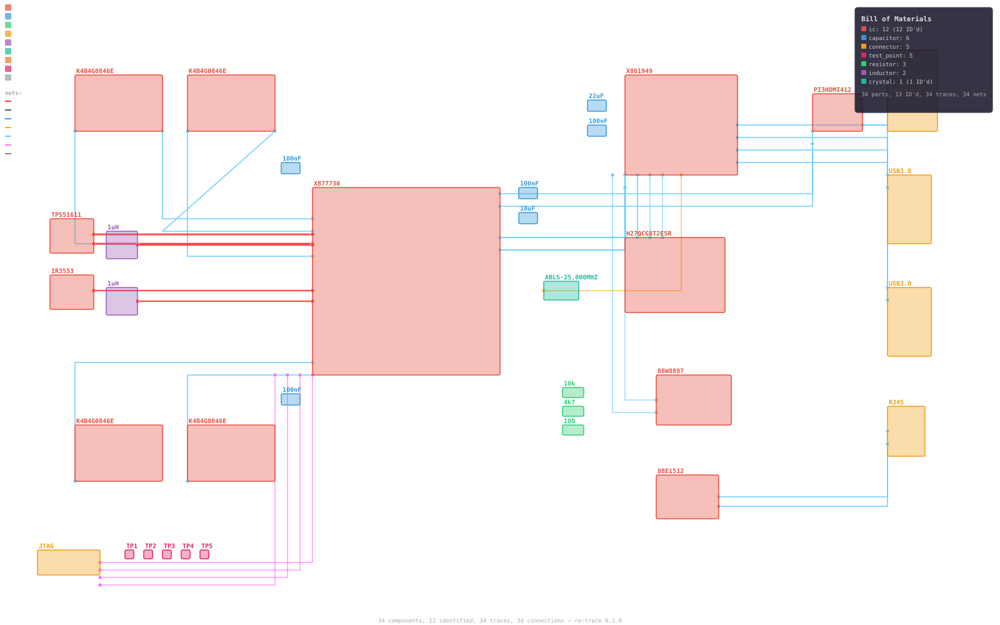
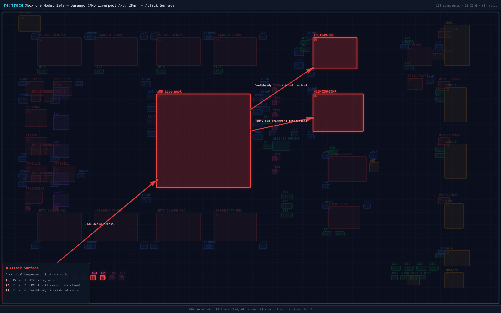
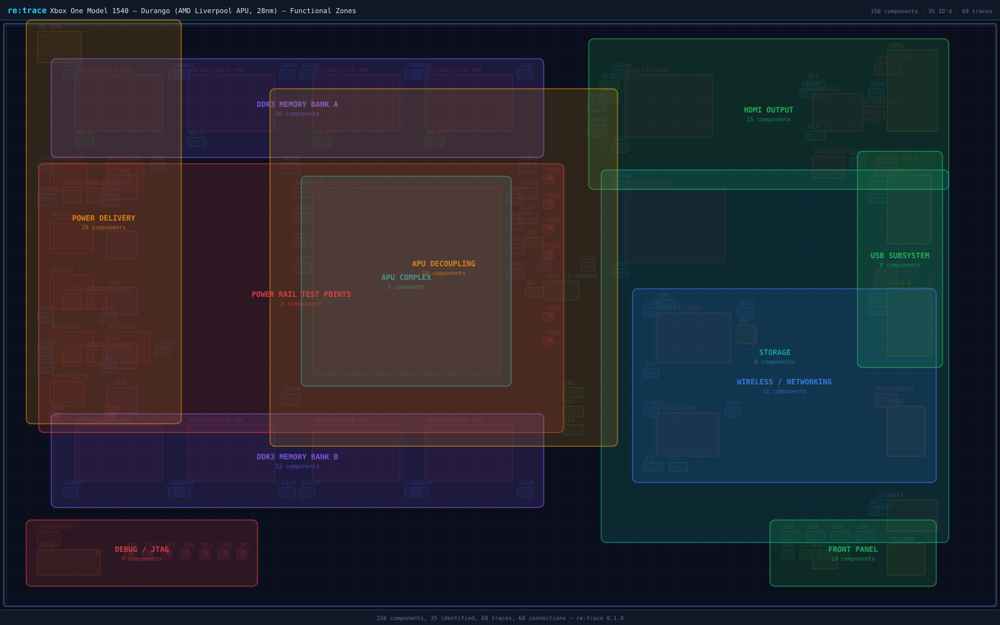
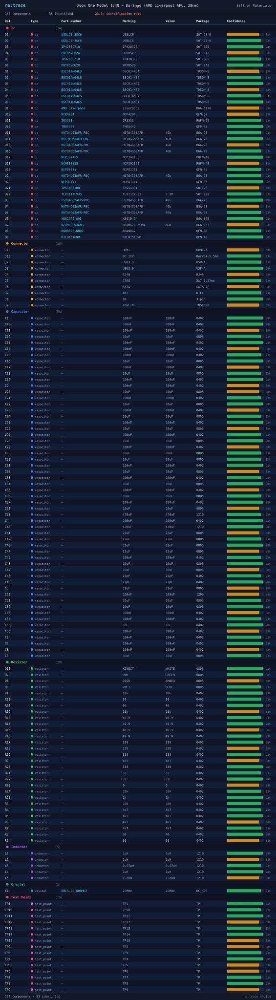

Photo in, attack surface out. The first open-source toolkit that identifies PCB components, extracts traces, maps trust chains, and tells you where to probe.
Eight stages. One command. No design files required.
Two targets. Both analyzed from photos alone.








Automatically detected debug interfaces with CVSS 3.1 scoring and MITRE ATT&CK mapping.
| Severity | CVSS | Interface | Target | Component | CWE | ATT&CK |
|---|---|---|---|---|---|---|
| HIGH | 7.6 | JTAG | Cisco ASA 5506-X | J15 | CWE-1191 | T1200, T0839 |
| MEDIUM | 6.8 | UART | Cisco ASA 5506-X | J10 | CWE-1299 | T1200 |
| HIGH | 7.6 | JTAG | Xbox One 1540 | J5 | CWE-1191 | T1200, T0839 |
Self-contained HTML deliverables. Sortable BOM, datasheet hyperlinks, print-friendly. What a consultancy ships to clients.
Enterprise firewall assessment. Intel Atom C2508, Xilinx Spartan-6 Trust Anchor, Thrangrycat attack path mapped. 2 findings, 177 components, 88 traces.
Gaming console assessment. AMD Liverpool APU, 16x DDR3 banks, Southbridge X861949, SK Hynix eMMC. 1 finding, 155 components, 72 traces.
Every artifact from a single scan.
Reconstructed schematic netlist. Components mapped to KiCad footprint libraries, nets from trace extraction.
Machine-readable bill of materials. Part numbers, markings, confidence scores, datasheet URLs.
Raw pipeline output. Component bounding boxes, trace polylines, pattern matches, timing metadata.